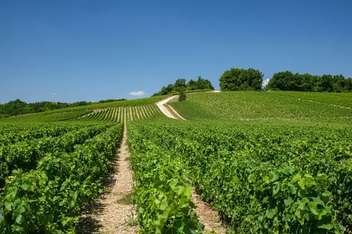

Home › Wine regions › Burgundy
Burgundy wine region

Photo: Alexander Van Steenberge on Unsplash
Terroir-driven reds and whites.
The benchmark for many wine styles, organized by appellation (AOC).
Notable producers in Burgundy
- Domaine de la Romanée-Conti
- Domaine Leroy
- Domaine Leflaive
- Domaine Armand Rousseau
- Louis Jadot
Official appellations
| Appellation | Status | Style | Grapes |
|---|---|---|---|
| Chablis (1938) Northernmost Burgundy, pure Chardonnay on Kimmeridgian limestone full of fossil oyster shells. Four levels: Petit Chablis, Chablis, Premier Cru and seven Grand Cru climats. | AOC | White | Chardonnay |
Burgundy wines to try
Louis Jadot Bourgogne Pinot Noir Couvent des Jacobins
Burgundy · Bourgogne · Pinot Noir
Light and fresh: red cherry, raspberry and a hint of earth.
Food: Roast chicken, mushroom dishes
William Fèvre Chablis Premier Cru Montée de Tonnerre
Burgundy · Chablis · Chardonnay
Steely and mineral: lemon, green apple and oyster-shell freshness.
Food: Oysters, grilled fish
Domaine de la Romanée-Conti Romanée-Conti Grand Cru
Burgundy · Vosne-Romanée · Pinot Noir
One of the world's most sought-after wines: rose, spice, red fruit and great length.
Food: Roast pigeon, truffle dishes
Marcel Lapierre Morgon
Burgundy · Morgon (Beaujolais) · Gamay
Natural-wine pioneer: crunchy cherry, raspberry, earth and silky texture.
Food: Charcuterie, roast chicken, cheese board
Leflaive & Associés Bourgogne Blanc
Burgundy · Bourgogne · Chardonnay
Négociant arm of Leflaive: pure, lemony Chardonnay with a light touch of oak.
Food: Chicken, white fish
Domaine Leflaive Bourgogne Blanc
Burgundy · Bourgogne · Chardonnay
Biodynamic Puligny-made Bourgogne: fine, mineral and citrus.
Food: Sole, roast chicken
Domaine Leflaive Puligny-Montrachet
Burgundy · Puligny-Montrachet · Chardonnay
Village Puligny from a benchmark estate: floral, tense and mineral.
Food: Turbot, scallops
Domaine Leflaive Puligny-Montrachet 1er Cru Clavoillon
Burgundy · Puligny-Montrachet · Chardonnay
Leflaive's largest premier cru: citrus, hazelnut and fine minerality.
Food: Lobster, veal
Domaine Leflaive Meursault 1er Cru Sous le Dos d'Âne
Burgundy · Meursault · Chardonnay
High-slope Meursault: richer fruit with Leflaive's precision.
Food: Chicken in cream, crab
Domaine Y & L Vocoret Petit Chablis
Burgundy · Petit Chablis · Chardonnay
Fresh, lemony entry-level Chablis with a crisp, chalky finish.
Food: Oysters, goat's cheese
Domaine Gérard Tremblay Chablis
Burgundy · Chablis · Chardonnay
Unoaked Chablis: green apple, lemon and a stony, saline finish.
Food: Oysters, moules
Domaine Billaud-Simon Chablis
Burgundy · Chablis · Chardonnay
Precise, steely village Chablis with citrus and oyster-shell minerality.
Food: Shellfish, sushi
Lucie Thiéblemont Chablis 1er Cru Les Fourneaux
Burgundy · Chablis · Chardonnay
Young grower's premier cru: taut citrus, flint and length.
Food: Scallops, trout
Domaine Chanson Chablis 1er Cru Montmains
Burgundy · Chablis · Chardonnay
Classic Montmains: lemon, white flowers and chalky tension.
Food: Sole, langoustine
William Fèvre Chablis Grand Cru Bougros
Burgundy · Chablis · Chardonnay
Powerful grand cru with ripe citrus, honey and mineral depth.
Food: Lobster, poultry
Domaine Vincent Dauvissat Chablis 1er Cru Vaillons
Burgundy · Chablis · Chardonnay
Cult grower Chablis: intense, mineral, gently oaked and long-lived.
Food: Turbot, Comté
Bonneau du Martray Corton-Charlemagne Grand Cru
Burgundy · Corton-Charlemagne · Chardonnay
Benchmark Corton-Charlemagne: powerful, mineral and slow to age.
Food: Lobster, roast chicken
Domaine Latour-Giraud Meursault
Burgundy · Meursault · Chardonnay
Rich, nutty village Meursault with ripe citrus and butter.
Food: Chicken in cream, crab
Domaine Ballot-Millot Meursault Les Narvaux
Burgundy · Meursault · Chardonnay
Upper-slope Meursault lieu-dit: taut, mineral and elegant.
Food: Scallops, veal
Vincent Girardin Meursault Vieilles Vignes
Burgundy · Meursault · Chardonnay
Old-vine village Meursault: generous, hazelnut and citrus.
Food: Lobster, chicken
Domaine Pierre Morey Meursault 1er Cru Les Tessons
Burgundy · Meursault · Chardonnay
Biodynamic, mineral Meursault from stony soils: precise and long.
Food: Turbot, Comté
Domaine Larue Saint-Aubin 1er Cru Les Combes
Burgundy · Saint-Aubin · Chardonnay
Bright, mineral Saint-Aubin: great-value Côte de Beaune white.
Food: Fish, chicken
Domaine Bzikot Puligny-Montrachet
Burgundy · Puligny-Montrachet · Chardonnay
Family-grower Puligny: floral, citrus and fine minerality.
Food: White fish, risotto
Fernand & Laurent Pillot Chassagne-Montrachet
Burgundy · Chassagne-Montrachet · Chardonnay
Ripe, round village Chassagne with stone fruit and hazelnut.
Food: Lobster, pork
Jean-Noël Gagnard Chassagne-Montrachet Les Masures
Burgundy · Chassagne-Montrachet · Chardonnay
Elegant Chassagne lieu-dit: citrus, white flowers and fine oak.
Food: Scallops, chicken
Domaine Chanson Mercurey Blanc
Burgundy · Mercurey · Chardonnay
Côte Chalonnaise white: fresh, apple and citrus with light oak.
Food: Fish, poultry
Domaine Jaeger-Defaix Rully 1er Cru Mont-Palais
Burgundy · Rully · Chardonnay
Lively, mineral Rully premier cru: excellent value.
Food: Seafood, goat's cheese
Eric Forest Pouilly-Fuissé 1er Cru Les Crays
Burgundy · Pouilly-Fuissé · Chardonnay
Mâconnais premier cru: ripe yet mineral, with citrus and stone fruit.
Food: Chicken, river fish
Domaine Chanson Bourgogne Chardonnay
Burgundy · Bourgogne · Chardonnay
Fresh, fruity everyday white Burgundy.
Food: Fish, salads
Louis Jadot Bourgogne Côte d'Or Pinot Noir
Burgundy · Bourgogne Côte d'Or · Pinot Noir
Fresh, cherry-scented red Burgundy from Côte d'Or vines.
Food: Chicken, salmon
Domaine Georges Joillot Bourgogne Rouge
Burgundy · Bourgogne · Pinot Noir
Pommard grower's Bourgogne: red fruit and gentle structure.
Food: Charcuterie, chicken
Domaine René Bouvier Gevrey-Chambertin
Burgundy · Gevrey-Chambertin · Pinot Noir
Firm, dark-fruited village Gevrey.
Food: Beef, game
Domaine Dugat-Py Gevrey-Chambertin 1er Cru Lavaux Saint-Jacques
Burgundy · Gevrey-Chambertin · Pinot Noir
Concentrated, old-vine Gevrey premier cru from a cult grower.
Food: Venison, beef
Domaine de la Romanée-Conti Romanée-Saint-Vivant Grand Cru
Burgundy · Romanée-Saint-Vivant · Pinot Noir
DRC grand cru: ethereal, spicy, silky and very long.
Food: Pigeon, truffle
Domaine Philippe Livera Côte de Nuits-Villages
Burgundy · Côte de Nuits-Villages · Pinot Noir
Juicy, dark-cherry Côte de Nuits red.
Food: Duck, mushrooms
Philippe Gavignet Nuits-Saint-Georges Vieilles Vignes
Burgundy · Nuits-Saint-Georges · Pinot Noir
Old-vine Nuits: dark cherry, earth and firm tannins.
Food: Beef bourguignon
Fernand & Laurent Pillot Volnay
Burgundy · Volnay · Pinot Noir
Fragrant, silky Volnay: red cherry and violet.
Food: Duck, roast chicken
Louis Jadot Volnay 1er Cru Clos de la Barre
Burgundy · Volnay · Pinot Noir
Monopole Volnay premier cru: elegant and finely structured.
Food: Veal, game birds
Domaine Ballot-Millot Pommard 1er Cru Pézerolles
Burgundy · Pommard · Pinot Noir
Pommard premier cru: dark fruit, spice and firm grip.
Food: Beef, lamb
Domaine Georges Joillot Pommard Les Noizons
Burgundy · Pommard · Pinot Noir
Village Pommard lieu-dit: sturdy and red-fruited.
Food: Beef, mushrooms
P. & M. Jacqueson Rully Les Chaponnières
Burgundy · Rully · Pinot Noir
Bright Côte Chalonnaise Pinot Noir.
Food: Charcuterie, chicken
Domaine Chanson Mercurey Rouge
Burgundy · Mercurey · Pinot Noir
Firm, cherry-fruited Mercurey.
Food: Pork, poultry
More wine regions in France
The Wine Reference newsletter
New wines, stories and career guides, one email a week at most.
Over 18s only. Unsubscribe any time with one click. Your email is stored securely by Kit and never shared.
Support The Wine Reference
This guide is free, with no paywall. If it helped you choose a bottle, you can buy me a glass and keep it growing.
🍷 Buy me a glass